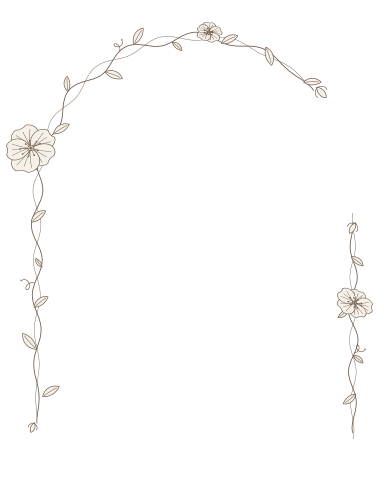

<title>Антон и Соня</title>
<link rel="preconnect" href="https://fonts.googleapis.com">
<link rel="preconnect" href="https://fonts.gstatic.com" crossorigin>
<link rel="stylesheet" href="https://fonts.googleapis.com/css2?family=Cormorant+Garamond:ital,wght@0,400;0,500;1,400&family=Great+Vibes&family=Manrope:wght@400;500&family=Prata&display=swap">
<style>
  /* Одна тема по замыслу: тёплая льняная бумага и сепия, как на фото */
  :root {
    color-scheme: light;
    --linen: #EDE6DA;
    --paper: #F6F1E8;
    --ink: #34291F;
    --muted: #7A6B5B;
    --hair: #CDBFAC;
    --rose: #8E6B5A;
    --display: "Prata", "Cormorant Garamond", Georgia, serif;
    --serif: "Cormorant Garamond", Georgia, "Times New Roman", serif;
    --script: "Great Vibes", "Cormorant Garamond", cursive;
    --sans: "Manrope", "Helvetica Neue", Arial, sans-serif;
  }
  * { box-sizing: border-box; }
  body {
    margin: 0;
    background: var(--linen);
    color: var(--ink);
    font-family: var(--serif);
    font-size: 20px;
    line-height: 1.55;
    padding-inline: 16px;
    padding-block: 40px 56px;
    -webkit-font-smoothing: antialiased;
  }
  /* Лёгкое зерно поверх всего, как у плёночного отпечатка */
  body::before {
    content: "";
    position: fixed;
    inset: 0;
    pointer-events: none;
    opacity: .22;
    mix-blend-mode: multiply;
    background-image: url("data:image/svg+xml,%3Csvg xmlns='http://www.w3.org/2000/svg' width='180' height='180'%3E%3Cfilter id='n'%3E%3CfeTurbulence type='fractalNoise' baseFrequency='.85' numOctaves='3' stitchTiles='stitch'/%3E%3CfeColorMatrix values='0 0 0 0 .35 0 0 0 0 .28 0 0 0 0 .2 0 0 0 .55 0'/%3E%3C/filter%3E%3Crect width='100%25' height='100%25' filter='url(%23n)'/%3E%3C/svg%3E");
  }

  .card {
    max-width: 560px;
    margin: 0 auto;
    background: var(--paper);
    padding-inline: clamp(20px, 7vw, 56px);
    padding-block: clamp(36px, 7vw, 64px);
    box-shadow: 0 1px 0 rgba(52,41,31,.06), 0 24px 60px -30px rgba(52,41,31,.35);
    position: relative;
    display: flex;
    flex-direction: column;
    align-items: center;
    text-align: center;
    gap: 40px;
  }
  /* Тонкая внутренняя рамка, как тиснение на открытке */
  .card::after {
    content: "";
    position: absolute;
    inset: 10px;
    border: 1px solid var(--hair);
    pointer-events: none;
  }

  .eyebrow {
    font-family: var(--sans);
    font-size: 11px;
    font-weight: 500;
    letter-spacing: .28em;
    text-transform: uppercase;
    color: var(--muted);
    margin: 0;
  }

  /* Фото в арке и рисованные веточки вокруг */
  .frame {
    position: relative;
    width: min(76%, 310px);
    display: flex;
    justify-content: center;
  }
  .photo {
    width: 100%;
    aspect-ratio: 3 / 4;
    max-width: 100%;
    border-radius: 999px 999px 4px 4px;
    overflow: hidden;
    margin: 0;
    outline: 1px solid var(--hair);
    outline-offset: 8px;
  }
  .photo img {
    width: 100%;
    height: 100%;
    object-fit: cover;
    object-position: 42% 38%;
    display: block;
    filter: sepia(.15) contrast(.98);
  }
  /* Тонкая лоза с цветами обвивает контур арки (рисуется tools/vine.py) */
  .vine {
    position: absolute;
    left: -15%;
    top: -11.25%;
    width: 130%;
    height: 125%;
    max-width: none;
    pointer-events: none;
  }

  .names {
    margin: 0;
    font-family: var(--display);
    font-weight: 400;
    font-size: clamp(44px, 12vw, 68px);
    line-height: 1;
    letter-spacing: .01em;
    display: flex;
    flex-direction: column;
    align-items: center;
    gap: 2px;
  }
  .names .amp {
    font-family: var(--script);
    font-size: .8em;
    color: var(--rose);
    line-height: .9;
  }

  .lead {
    margin: 0;
    max-width: 30ch;
    font-style: italic;
    font-size: 22px;
    text-wrap: balance;
  }

  .rule {
    width: 48px;
    height: 1px;
    background: var(--hair);
    border: 0;
    margin: 0;
  }

  /* Дата */
  .date {
    display: grid;
    grid-template-columns: 1fr auto 1fr;
    align-items: center;
    gap: 18px;
    width: 100%;
  }
  .date .side {
    font-family: var(--sans);
    font-size: 11px;
    letter-spacing: .24em;
    text-transform: uppercase;
    color: var(--muted);
    border-block: 1px solid var(--hair);
    padding-block: 8px;
  }
  .date .day {
    font-family: var(--display);
    font-size: clamp(64px, 18vw, 96px);
    line-height: 1;
    font-variant-numeric: lining-nums;
  }

  /* Календарь ноября 2026 */
  .cal {
    width: min(100%, 300px);
  }
  .cal-title {
    font-family: var(--serif);
    font-style: italic;
    font-size: 20px;
    margin: 0 0 10px;
  }
  .cal-grid {
    display: grid;
    grid-template-columns: repeat(7, 1fr);
    gap: 4px 0;
    font-family: var(--sans);
    font-size: 12px;
    font-variant-numeric: tabular-nums;
    color: var(--muted);
  }
  .cal-grid .wd {
    font-size: 10px;
    letter-spacing: .12em;
    text-transform: uppercase;
    padding-bottom: 6px;
  }
  .cal-grid span {
    height: 30px;
    display: grid;
    place-items: center;
  }
  .cal-grid .mark {
    color: var(--ink);
    font-weight: 500;
    position: relative;
  }
  .cal-grid .mark::before {
    content: "";
    position: absolute;
    width: 30px;
    height: 30px;
    border: 1px solid var(--rose);
    border-radius: 50%;
    transform: rotate(-8deg) scaleX(1.12);
  }

  /* Детали */
  .details {
    width: 100%;
    display: grid;
    grid-template-columns: 1fr 1fr;
    border-top: 1px solid var(--hair);
    border-bottom: 1px solid var(--hair);
  }
  .details > div {
    padding: 22px 12px;
    display: flex;
    flex-direction: column;
    gap: 6px;
  }
  .details > div + div { border-left: 1px solid var(--hair); }
  .details .val {
    font-family: var(--display);
    font-size: 26px;
    line-height: 1.15;
  }
  .details .sub {
    font-size: 17px;
    font-style: italic;
    color: var(--muted);
  }
  .map {
    align-self: center;
    margin-top: 4px;
    font-family: var(--sans);
    font-size: 11px;
    letter-spacing: .18em;
    text-transform: uppercase;
    color: var(--rose);
    text-decoration: none;
    border-bottom: 1px solid currentColor;
    padding-bottom: 2px;
  }
  .map:hover, .map:focus-visible { color: var(--ink); }
  .map:focus-visible { outline: 1px solid var(--rose); outline-offset: 4px; }

  .note {
    margin: 0;
    max-width: 34ch;
    font-size: 19px;
    text-wrap: pretty;
  }

  .count {
    display: flex;
    gap: clamp(18px, 6vw, 36px);
    justify-content: center;
  }
  .count div {
    display: flex;
    flex-direction: column;
    gap: 4px;
  }
  .count b {
    font-family: var(--display);
    font-weight: 400;
    font-size: 34px;
    line-height: 1;
    font-variant-numeric: tabular-nums;
  }
  .count small {
    font-family: var(--sans);
    font-size: 10px;
    letter-spacing: .2em;
    text-transform: uppercase;
    color: var(--muted);
  }

  .sign {
    margin: 0;
    display: flex;
    flex-direction: column;
    gap: 4px;
  }
  .sign .with {
    font-style: italic;
    color: var(--muted);
    font-size: 18px;
  }
  .sign .who {
    font-family: var(--script);
    font-size: 40px;
    color: var(--rose);
    line-height: 1.1;
  }

  @media (max-width: 420px) {
    body { font-size: 18px; }
    .details { grid-template-columns: 1fr; }
    .details > div + div { border-left: 0; border-top: 1px solid var(--hair); }
  }

  @media (prefers-reduced-motion: no-preference) {
    .card > * { animation: rise .9s cubic-bezier(.2,.7,.2,1) both; }
    .card > *:nth-child(2) { animation-delay: .08s; }
    .card > *:nth-child(3) { animation-delay: .16s; }
    .card > *:nth-child(n+4) { animation-delay: .24s; }
    @keyframes rise { from { transform: translateY(10px); } to { transform: none; } }
  }
</style>

<main class="card">
  <p class="eyebrow">Приглашение на роспись</p>

  <div class="frame">
    <figure class="photo">
      
    </figure>
    
  </div>

  <h1 class="names">
    <span>Антон</span>
    <span class="amp">и</span>
    <span>Соня</span>
  </h1>

  <p class="lead">Мы решили стать семьёй и очень хотим, чтобы в этот день вы были рядом</p>

  <hr class="rule">

  <div class="date" aria-label="14 ноября 2026 года, суббота">
    <span class="side">Суббота</span>
    <span class="day">14</span>
    <span class="side">Ноябрь</span>
  </div>

  <div class="cal" aria-hidden="true">
    <p class="cal-title">ноябрь 2026</p>
    <div class="cal-grid" id="cal"></div>
  </div>

  <div class="details">
    <div>
      <span class="eyebrow">Время</span>
      <span class="val">15:00</span>
      <span class="sub">суббота, 14 ноября</span>
    </div>
    <div>
      <span class="eyebrow">Место</span>
      <span class="val">ЗАГС</span>
      <span class="sub">Университетский пер., 48/2А, Ростов-на-Дону</span>
      <a class="map" href="https://yandex.ru/maps/?text=%D0%A0%D0%BE%D1%81%D1%82%D0%BE%D0%B2-%D0%BD%D0%B0-%D0%94%D0%BE%D0%BD%D1%83%2C%20%D0%A3%D0%BD%D0%B8%D0%B2%D0%B5%D1%80%D1%81%D0%B8%D1%82%D0%B5%D1%82%D1%81%D0%BA%D0%B8%D0%B9%20%D0%BF%D0%B5%D1%80%D0%B5%D1%83%D0%BB%D0%BE%D0%BA%2C%2048%2F2%D0%90" target="_blank" rel="noopener">Открыть в картах</a>
    </div>
  </div>

  <p class="note">Роспись будет камерной, только самые близкие. Пожалуйста, скажите нам, получится ли у вас прийти.</p>

  <div class="count" id="count" aria-label="До росписи осталось">
    <div><b id="c-d">—</b><small>дней</small></div>
    <div><b id="c-h">—</b><small>часов</small></div>
    <div><b id="c-m">—</b><small>минут</small></div>
  </div>

  <p class="sign">
    <span class="with">с любовью,</span>
    <span class="who">Антон и Соня</span>
  </p>
</main>

<script>
  // Календарь: 1 ноября 2026 — воскресенье, неделя с понедельника
  (function () {
    var cal = document.getElementById("cal");
    var html = ["Пн","Вт","Ср","Чт","Пт","Сб","Вс"].map(function (d) {
      return '<span class="wd">' + d + '</span>';
    }).join("");
    var offset = (new Date(2026, 10, 1).getDay() + 6) % 7;
    for (var i = 0; i < offset; i++) html += "<span></span>";
    for (var d = 1; d <= 30; d++) {
      html += '<span' + (d === 14 ? ' class="mark"' : '') + '>' + d + '</span>';
    }
    cal.innerHTML = html;
  })();

  // Обратный отсчёт до 14.11.2026, 15:00
  (function () {
    var target = new Date(2026, 10, 14, 15, 0, 0).getTime();
    var dEl = document.getElementById("c-d"),
        hEl = document.getElementById("c-h"),
        mEl = document.getElementById("c-m");
    function tick() {
      var ms = Math.max(0, target - Date.now());
      var m = Math.floor(ms / 60000);
      dEl.textContent = Math.floor(m / 1440);
      hEl.textContent = Math.floor(m % 1440 / 60);
      mEl.textContent = m % 60;
    }
    tick();
    setInterval(tick, 30000);
  })();
</script>
